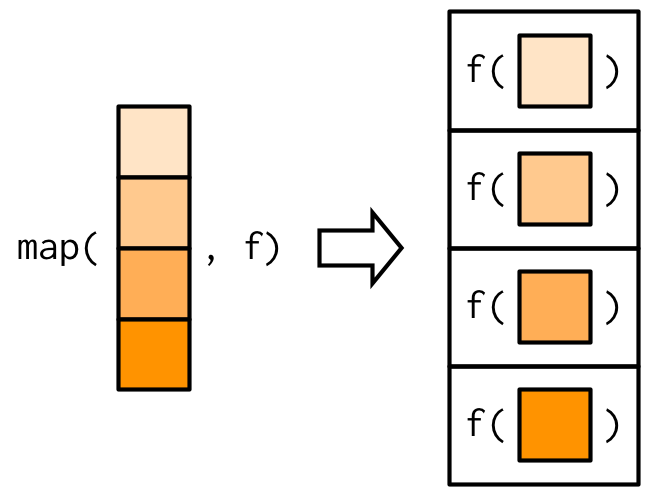
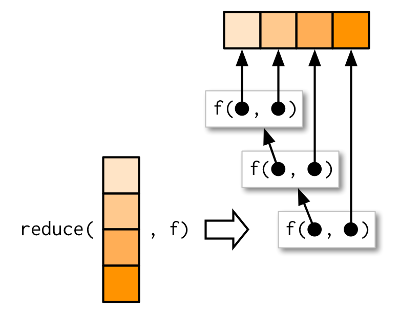
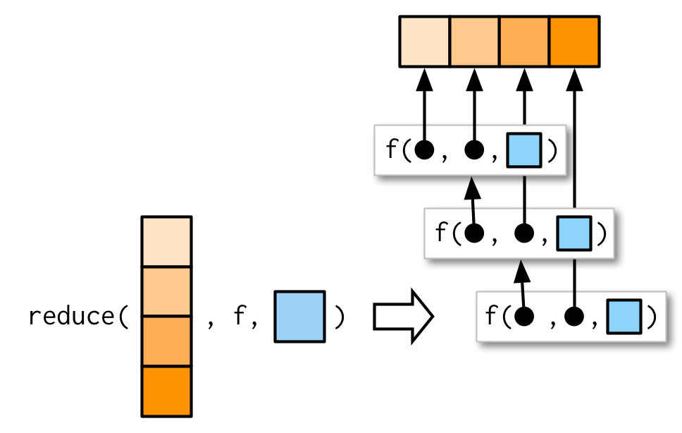
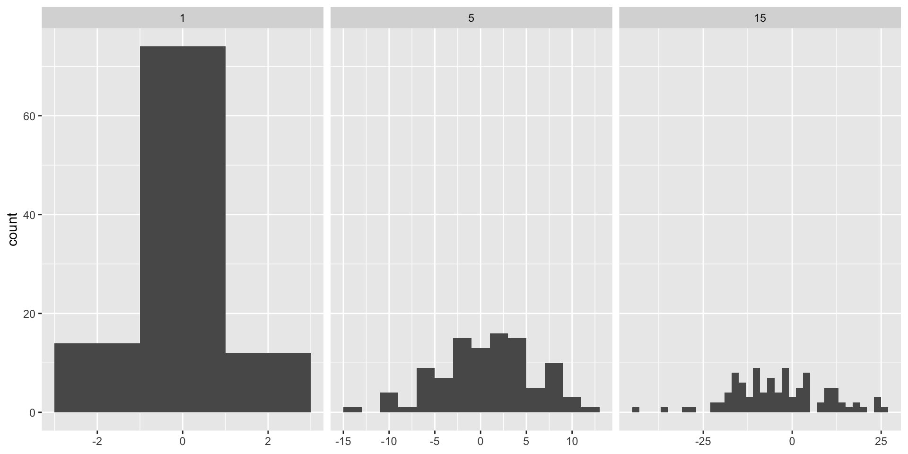
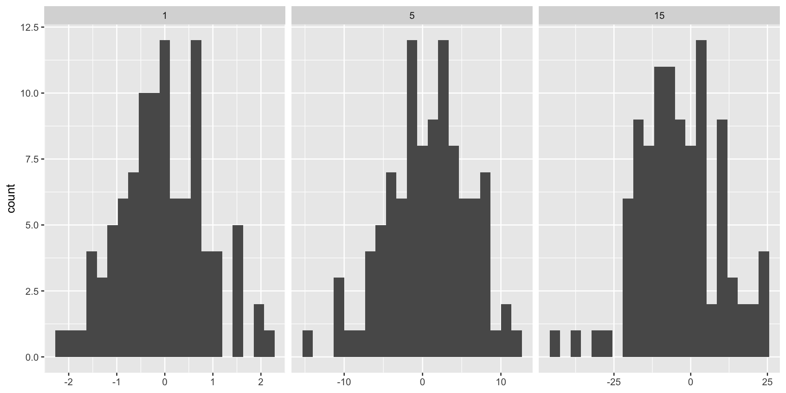

[[1]]
[1] 1
[[2]]
[1] 25
[[3]]
[1] 49
[[4]]
[1] 81BST430 Lecture 11A
Functional programming with purrr
Seong-Hwan Jun
Map and reduce
Mapping: distribute a large scale data problem into smaller pieces and assign each piece to a different computing node.
Reduce: combine the results from each node into a final result.
Map and reduce
Example: count the frequency of words in a large corpus.
Each node counts the frequency of words in its assigned piece of the corpus (map).
Then, the counts from each node are combined to get the total counts (reduce).
Hadoop and Spark are widely used platforms for distributed computing that implement the MapReduce paradigm.
Map: functional
- Essentially,
mapis a verb for applying a function to each element of a list or vector. - In R,
base::applyis a basic example ofmapthat applies a function to the margins of an array or matrix. base::lapplyfunction returns lists (hence the “l” inlapply).- The
purrrpackage from tidyverse provides a more consistent and user-friendly set ofmapfunctions.
purrr::map
- takes a vector and a function and calls the function once for each element of the vector;
- returns a list;
- implemented in C for performance.
is equivalent to list(f(x[1]), f(x[2]), f(x[3]), f(x[4])).
purrr::map

ADVR Ch. 9
purrr::map
returns an atomic vector…
map_lgl: of logicalsmap_int: of integersmap_dbl: of doublesmap_chr: of characters
Inline (anonymous) functions
purrr provide shortcuts for anonymous functions:
[[1]]
[1] -0.3282237 0.7277602 -1.3256443 0.9296780 -0.2383811
[[2]]
[1] 2.079525 2.261968 4.012060 1.308766 2.579172
[[3]]
[1] 2.6821515 0.4448052 3.0792411 1.9976932 2.7107138
[[4]]
[1] 2.681011 4.252758 2.464766 5.616796 4.489707
[[5]]
[1] 4.439455 2.946883 4.587113 6.491458 4.724296Additional arguments …
map will pass along any additional arguments (...) to the function .f.
Additional arguments …

ADVR Ch. 9
Arguments do not get decomposed

ADVR Ch. 9
Quiz
vs
Map variants
map2: iterate over two inputs.pmap: iterate over multiple inputs.imap: iterate with an index.
There’s also: - walk: no return value just walk through the input. - modify: output the same type as input.
walk and modify also have [walk|modify]2, p[walk|modify], and i[walk|modify].
Note: modify does not modify in place.
Quiz
vs
walk
These functions are mainly for side-effects.
- process the data and write to file via
write.csv - create a plot and do
ggsave
imap
imap can be seen as map2 with the second input being an index or name of the items in the first input.
Quiz
Replace imap call with map2.
Quiz
Exercise 9.4.6 Q2 from ADVR.
Rewrite the following code to use iwalk() instead of walk2(). What are the advantages and disadvantages?
pmap
Ideal for working with data frames or lists of parameters.
params <- tibble::tribble(
~ n, ~ min, ~ max,
1L, 0, 1,
2L, 10, 100,
3L, 100, 1000
)
pmap(params, runif)[[1]]
[1] 0.2340386
[[2]]
[1] 81.52564 58.25198
[[3]]
[1] 136.9632 550.6070 642.7421Note: column names match the argument names of runif.
pmap
reduce
reduce(1:4, f)is equivalent tof(f(f(1, 2), 3), 4)- Generalise a function that works with two inputs (a binary function) to work with any number of inputs.
- Result of the previous call to
fis passed as the first argument to the next call tof.
reduce

ADVR Ch. 9
reduce
Write code to find intersection of a list of vectors.
reduce
reduce with arguments

ADVR Ch. 9
accumulate
A variant of reduce that returns the intermediate results as well.
Cumulative sum
Count the number of times a specific string appears in a corpus.
Quiz
Practice using map2_dbl and accumulate.
Predicate functionals
every: all elements satisfy a condition.some: at least one element satisfies a condition.detect: return the first element that satisfies a condition.detect_index: return the index of the first element that satisfies a condition.none: no elements satisfy a condition.keep: keep elements that satisfy a condition.discard: discard elements that satisfy a condition.modify_if: modify elements that satisfy a condition.
Function factories
Function factories are functions that make functions.
The enclosing environment of the manufactured function is an execution environment of the function factory.
Function factories: environment
make_power <- function(n) {
function(x) {
x ^ n
}
}
square <- make_power(2)
rlang::env_print(square)<environment: 0x7f7dd44570f0>
Parent: <environment: global>
Bindings:
• n: <lazy>It has binding to value n, which was passed in as an argument to make_power.
Function factories: lazy evaluation
What does n: <lazy> mean?
What???
Function factories: lazy evaluation
The value of n is looked up when the function is called, not when it is created.
So if it was assigned to a variable in a parent environment (in this case, global) and that variable’s value is changed, the function will use the new value.
Function factories: force evaluation
ggplot2: adjusting bin width

ggplot2: adjusting bin width
Roughly speaking, we want similar number of observations in each bin. In this case, variability in the data should be used to determine the bin width for each group.
binwidth: The width of the bins. Can be specified as a numeric value or as a function that calculates width from unscaled x. Here, “unscaled x” refers to the original x values in the data, before application of any scale transformation. When specifying a function along with a grouping structure, the function will be called once per group.
ggplot2: adjusting bin width

ggplot2: adjusting bin width
library(dplyr)
f <- binwidth_bins(20)
df %>%
group_by(sd) %>%
select(x) %>%
summarise(binwidth = f(x))# A tibble: 3 × 2
sd binwidth
<dbl> <dbl>
1 1 0.217
2 5 1.33
3 15 3.40 n=20indicates the total number of bins you want to divide the data into.- The binwidth is larger for large standard deviation.
Function factories and functionals
Memoisation
- A technique to cache the results of function calls.
- Useful for functions that are computationally expensive and are called repeatedly with the same arguments.
Memoisation
user system elapsed
1.500 0.009 1.514 user system elapsed
0.019 0.000 0.019 The values of fibonacci sequences for \(n \leq 30\) are cached after the first call, so subsequent calls are much faster.
Reference
- Ch. 9-11 of Advanced R (2e) by Hadley Wickham and Jennifer Bryan.